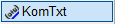
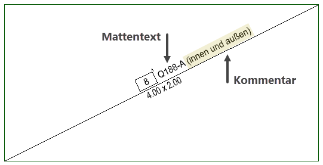
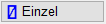
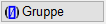
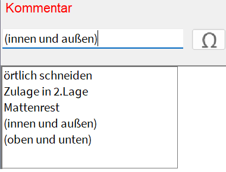

")

Folienbelegung: Wenn AutFol aktiviert ist (s. Untere Menüleiste), werden die Kommentartexte in der Folie 3 (Matten) abgelegt.
Hinzufügen eines Kommentars zum angeklickten Mattentext. Der Kommentartext ist an die Lage des Mattentextes gekoppelt und behält somit, z. B. beim Verschieben oder Kopieren, seine Lage am Mattentext bei. Mit den Funktionen in [Konst1 | Texte] können Sie den Kommentar, wie jeden anderen Text auch, bearbeiten.

So wird's gemacht:
§Wählen Sie im Funktionsbereich zunächst eine der folgenden Optionen.
 |
Erzeugt den Kommentartext für die angeklickte Matte. |
 |
Erzeugt beim Anklicken der Diagonalen einer Gruppe für alle dazugehörigen Matten die Kommentartexte. |
§Geben Sie einen Text ein. [Kommentar].
Sie können aus der Auswahlliste einen Favoritentext oder einen der 10 zuletzt eingegebenen Texte durch Anklicken in die Eingabezeile übernehmen und weiterbearbeiten. Wenn Sie einen bestimmten Text aus der Zeichnung übernehmen möchten, klicken Sie diesen an. Mit  rechts neben der Eingabe können Sie Sonderzeichen einfügen.
rechts neben der Eingabe können Sie Sonderzeichen einfügen.
 |
§Bestätigen Sie mit der Eingabetaste oder mit Rechtsklick.
§Legen Sie die Lage des Kommentartextes bezogen auf den Mattentext fest. Sie können den Kommentar über, unter oder neben den Mattentext setzen und dabei die Ausrichtung bestimmen. [Zu welchen Matten?].
Der blaue Strich im Icon entspricht der Lage des Kommentartextes.
|

§Klicken Sie den Mattentext oder die Diagonale an. [Zu welchen Matten?].
Der Kommentar wird angeschrieben. Klicken Sie ggf. weitere Mattentexte oder Diagonalen nacheinander an. Die Lage des Kommentars kann an jedem Mattentext neu bestimmt werden.
§Wenn Sie mit  einen Schritt zurückgehen, können Sie den vorhandenen Kommentar bearbeiten. Ein vorhandener Kommentar kann durch erneutes Anklicken des Mattentextes oder der Diagonalen ersetzt werden.
einen Schritt zurückgehen, können Sie den vorhandenen Kommentar bearbeiten. Ein vorhandener Kommentar kann durch erneutes Anklicken des Mattentextes oder der Diagonalen ersetzt werden.
§Um einen Kommentar zu entfernen, löschen Sie den Text aus der Eingabe und klicken Sie den entsprechenden Mattentext oder die Diagonale an.
Zugehörige Referenzen: